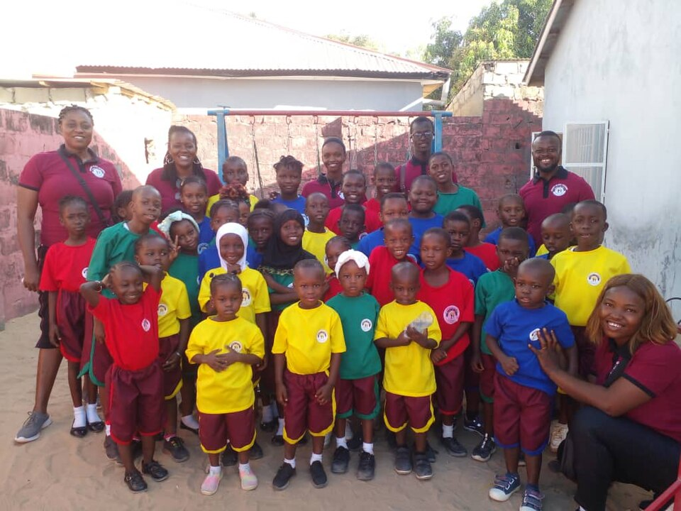
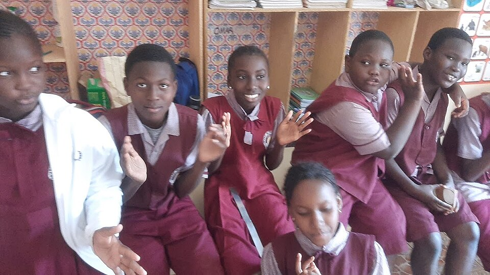
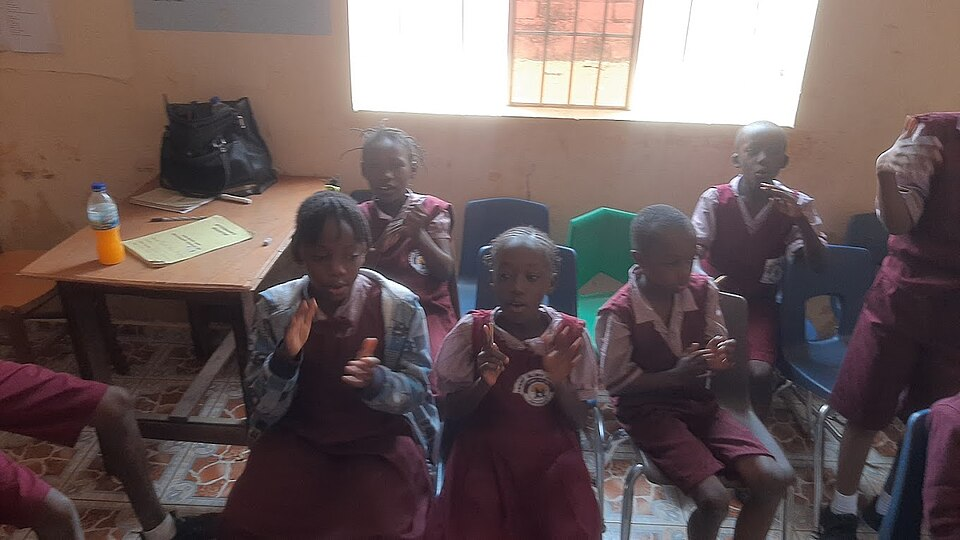
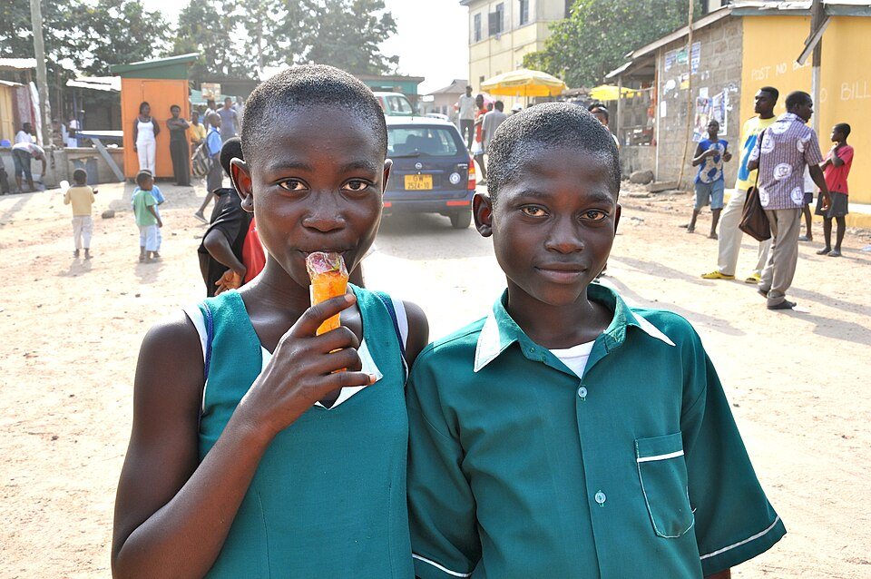
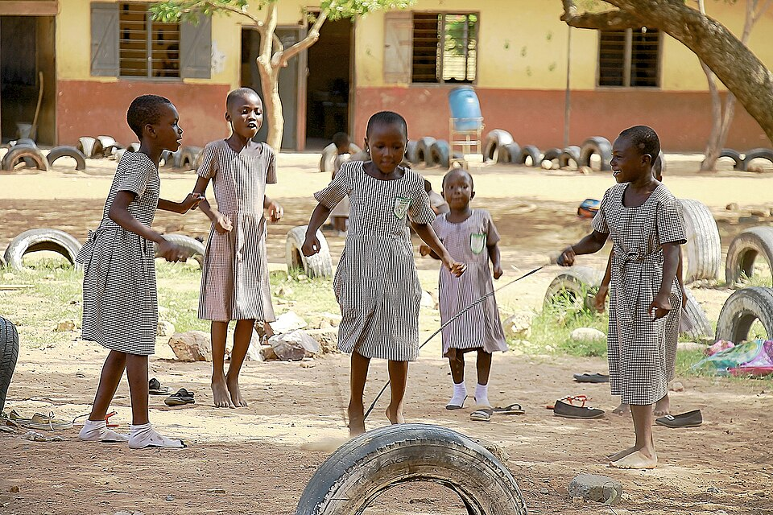

Practical Life
Activity example
MORE THAN A CLASSROOM
A caring community where every child can discover new interests and grow in confidence.
OUR COMMUNITY
School clubs, house groups and regular activities are to be confirmed. These examples describe possibilities, not a confirmed programme.
Activity example
Activity example
Activity example
Activity example
A DAY OF DISCOVERY
Illustrative activity ideas only; confirm actual clubs and activities with the school.
ACTIVITIES & SKILLS
Care for the environment
Gardening and nature
Music and movement
Creative expression
Outdoor games
Storytelling and reading
Practical life skills
Local culture and traditions
Collaborative projects
Community experiences
Activities shown are examples for confirmation and are not a published school timetable.
A SHARED COMMUNITY
Children, educators and families each contribute to a respectful learning community. School traditions, family partnership arrangements and community programmes are to be confirmed.
More about our approach ↗
LIFE AT SOLID ROCK
Use the arrows or swipe to browse placeholder photos.

Classroom learning · Placeholder photo

Classroom learning · Placeholder photo

School community · Placeholder photo

Outdoor play · Placeholder photo
COME SEE THE SCHOOL
Arrange a visit to learn about the prepared environment and current programme details.
Arrange a visitEXPLORE MORE MOMENTS
View placeholder images of classroom life, Montessori learning, play and community. All photos should be replaced with school-approved images.
Open Photo GalleryFIND YOUR PLACE